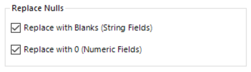
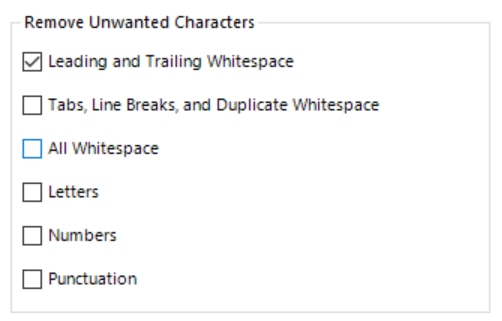
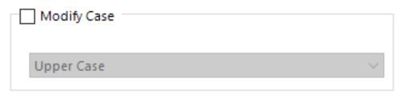

.png)
Wouldn’t it be nice if all of our raw data came to us without missing values, nulls, and unnecessary random whitespace? Unfortunately for the most of us that isn’t the day-to-day reality of working with data and therefore we need methods to be able to clean our data to avoid errors that may occur when we further process our data. Without this crucial step we’ll find that formulas don’t behave as expected, joins don’t match correctly and filtering logic appears random. In tools like Excel and even with SQL, cleaning data can often be challenging and time consuming but Alteryx enables faster ways to deal with this step of data preparation.
The data cleansing tool in the preparation tab of the tool pallet allows us to quickly deal with Null values, unwanted numbers, letters and whitespace plus convert strings to upper or lower case.

This can be applied to all our fields or we can specify that cleaning be only applied to certain fields within our data.
The Data Cleansing configuration window gives us three sections to define how we want to clean our data:
1. The “Replace Nulls” section enables us to quickly convert any Null values that may occur to be replaced by blanks where our field(s) is a string data type or be replaced with 0s for numeric fields. This will enable us to perform calculations and summarise the data easier and more accurately further along in our workflow.
2. Remove Unwanted Characters will let us remove whitespace, specifying whether that be all whitespace (leading and trailing along with space between words) or just any random leading or trailing whitespace that might have been imported with the data. In addition, we sometimes find that we will have values that have been added that are part of the formatting or data structure of the source and not actually part of the data itself. By specifying to remove letters, numbers or punctuation we can quickly strip our data back to values we want to work with.
3. Finally we can convert string values in our workflow to upper or lower case. This is useful if we have a mix of cases in fields and we wish to perform some calculation grouped by this field or join to another data set as these are all case sensitive and will be treated as different values.
In our data set we can see that the PromoID field is NULL for many records where an item was ordered outside of a promotion. In addition we may have trailing whitespace that will cause issues later on when we attempt to join to other data sources using common fields. So let’s clean our data using the data cleansing tool.

Step 1:
Drag and drop a Data Cleansing tool between the 2nd select tool and the browse tool

Step 2:
Select the Data Cleansing tool and then in the configuration window make sure all 5 fields are selected. Let’s replace all the NULL values in PromoID with blank spaces by checking “Replace with Blanks” under Replace NULLs and check only “Leading and Trailing Whitespace” in the Remove Unwanted Characters section to take care of any random whitespace we may have in our data.

Step 3:
If we run our workflow and browse we now see that the data cleansing tool has replaced all the NULL values in the PromoID field and we can now rest easy that there isn’t any random white space in our data that may cause us problems later.

Tip: Where possible select only the fields that you think require cleaning as when processing large datasets passing fields that don't need cleaning through the tool will cause the workflow to take longer to run.